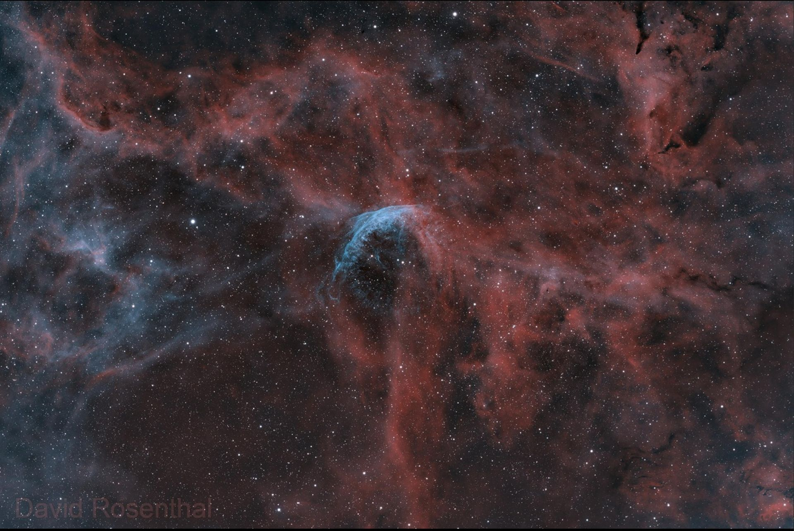
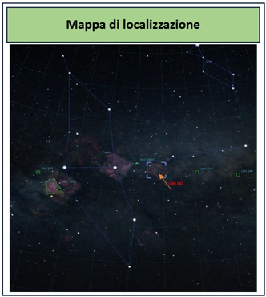

LBN 182 – Una debole nebulosa nel Cigno
LBN 182 – A Faint Nebula in Cygnus
LBN 182 • Costellazione del Cigno
LBN 182 • Cygnus

alt="LBN 182 faint nebula in Cygnus"
class="hero-image">
Informazioni sull'oggetto
About the Object
LBN 182 è una debole nebulosa oscura situata nella costellazione del Cigno.
Di essa, a parte le coordinate, si trovano poche informazioni.
Catalogata nel catalogo Lynds Bright Nebula (LBN), è composta da polvere
e gas interstellari che interagiscono con la luce stellare circostante,
producendo sottili riflessi ed emissioni.
LBN 182 is a faint dark nebula located in the constellation of Cygnus.
Apart from its coordinates, very little information is available about it.
Listed in the Lynds Bright Nebula (LBN) catalogue, it consists of interstellar
dust and gas interacting with the surrounding starlight, producing subtle
reflections and emissions.
La regione è immersa in una complessa rete di nubi molecolari, idrogeno
diffuso e bande di polvere scura che caratterizzano questa parte del Cigno.
Sullo sfondo denso della Via Lattea, LBN 182 appare come una delicata miscela
di strutture polverose e deboli filamenti luminosi, il che la rende un soggetto
interessante per l'astrofotografia del cielo profondo.
The region is immersed in a complex network of molecular clouds, diffuse
hydrogen and dark dust lanes that characterize this part of Cygnus.
Against the dense background of the Milky Way, LBN 182 appears as a delicate
mixture of dusty structures and faint luminous filaments, making it an
interesting subject for deep-sky astrophotography.
In essa si distinguono svariati oggetti: la stella variabile di Wolf-Rayet
WR 134, alcune nebulose oscure e l'ammasso aperto NGC 6883.
Several objects can be distinguished in the region, including the Wolf-Rayet
variable star WR 134, some dark nebulae and the open cluster NGC 6883.
Dati principali
Main Object Data
|
Nome
Name
|
LBN 182 |
|
Costellazione
Constellation
|
Cygnus |
|
Catalogo
Catalogue
|
Lynds Bright Nebula (LBN) |
|
Tipo di oggetto
Object Type
|
Debole nebulosa oscura
Faint dark nebula
|
|
Oggetti nel campo
Objects in the Field
|
WR 134 • NGC 6883 |
Come trovarla
How to Find It
LBN 182 si trova nella costellazione del Cigno, in una regione molto ricca
di nebulose, stelle e strutture di polvere interstellare.
La mappa mostra la posizione della nebulosa e alcuni dei principali
riferimenti presenti nella stessa area di cielo.
LBN 182 is located in the constellation of Cygnus, in a region rich in
nebulae, stars and structures of interstellar dust.
The map shows the position of the nebula and some of the main reference
objects in the same area of sky.

alt="Star map showing the location of LBN 182 in Cygnus"
class="object-map">
Il campo fotografato
The Photographed Field
L'immagine annotata evidenzia LBN 182 e alcuni degli oggetti presenti
nella stessa regione del Cigno, tra cui la stella WR 134 e l'ammasso aperto
NGC 6883.
The annotated image highlights LBN 182 and some of the objects present
in the same region of Cygnus, including the star WR 134 and the open cluster
NGC 6883.
 alt="Annotated image of the LBN 182 field in Cygnus"
class="featured-image">
alt="Annotated image of the LBN 182 field in Cygnus"
class="featured-image">
Questa mia immagine
About My Image
Ho scelto di riprendere questa regione del Cigno per mettere in evidenza
le delicate strutture di nebulosità e polvere presenti intorno a LBN 182.
Il campo mostra anche la stella WR 134 e l'ammasso aperto NGC 6883.
I chose to photograph this region of Cygnus to reveal the delicate structures
of nebulosity and dust surrounding LBN 182.
The field also shows the star WR 134 and the open cluster NGC 6883.
Acquisizione
Acquisition
Tempo totale di integrazione: 3 ore e 36 minuti
Total integration time: 3 hours 36 minutes
-
11 × 60 s senza filtro −10°C
-
41 × 300 s Optolong L-eXtreme −10°C
Le immagini sono state riprese dal cielo di Monti di Mezzenile
il 18 luglio 2026.
The images were captured from the skies of Monti di Mezzenile
on 18 July 2026.
Strumentazione
Equipment
|
Telescopio
Telescope
|
GSO Newton 154/600 |
|
Camera principale
Main Camera
|
ZWO ASI 294 MC Pro |
|
Telescopio guida
Guide Scope
|
60/240 mm |
|
Camera guida
Guide Camera
|
ZWO ASI 120MM Mini |
|
Montatura
Mount
|
Sky-Watcher HEQ5 SynScan GOTO |
|
Acquisizione
Acquisition
|
ZWO ASIAIR Pro |
|
Elaborazione
Processing
|
PixInsight |
Elaborazione
Processing
L'immagine è stata elaborata in RGB con PixInsight.
The image was processed in RGB using PixInsight.
Dietro questa immagine
Behind This Image
La particolarità di questa ripresa è la presenza di una debole nebulosità
immersa nel ricco campo stellare e nebulare del Cigno, che richiede una
elaborazione attenta per mettere in evidenza le strutture più delicate.
The distinctive feature of this image is the presence of faint nebulosity
immersed in the rich stellar and nebular field of Cygnus, requiring careful
processing to reveal its most delicate structures.